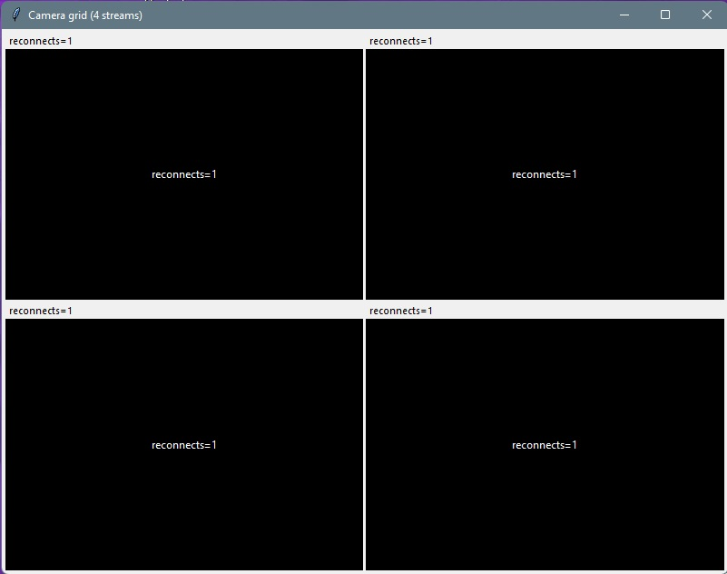

The Harmony Model
Enterprise software, composed as one
The Harmony Model is the centre of gravity — portals that weave HR, ARIADNE gamified training, project delivery, field mobile, and automation into one mature operating system. Lynx and C.G.A are focused companions alongside it.
The Harmony Model.
Every Application in Concert.
Not a collection of disconnected apps — a composed ecosystem where Portal SME & Enterprise Edition, field mobile applications, and automations share one platform DNA. HR, projects, field work, compliance, and training move as one.
The Harmony Model
Most vendors sell separate apps and bolt on integrations later. The Harmony Model is different: four product lines composed around a shared platform core — each module an instrument, the organisation the orchestra. Data flows inward. Permissions gate every action. Automation carries work forward. External parties stay outside the firewall, yet remain part of the same thread.
One Source of Truth
A shared SQL backbone holds master data once. Projects, people, assets, and submissions reference the same records — not copies synced overnight.
Unified Access Layer
Role-based permissions gate every screen across every product family. The same identity, the same approval logic — from leave requests to certification sign-off.
Continuous Flow
Plan in the portal, execute on mobile, notify via automation. Work moves forward without email chasing or spreadsheet handoffs.
Trusted Boundaries
Internal teams work in harmony inside the ecosystem. External clients, auditors, and funders use a secure vault — PIN-locked, audited, and linked back to PMO.
Progressive Composition
Start with one module. Add families as the organisation matures. No rip-and-replace — each new instrument joins the orchestra without re-tuning the rest.
Four product lines · one core
A Day in Harmony
One continuous thread — from field to boardroom to client.
Morning — Field
An engineer completes a work order in FieldTask. Photos and status sync as JSON — no phone call, no re-entry.
Midday — PMO
The project manager opens PMTOOL. Milestone health, WO completion, and fleet status reflect the same live data the field just captured.
Afternoon — Client
A deliverable goes out through the secure client vault. PIN-locked, audited, one-time download — and the submission status appears instantly in the project dossier.
Evening — Compliance
CertMailer notifies the CFO. Certification moves through the approval chain in CERTS. Audit history records every step — ready for funders.
Anytime — People
The same employee who worked on site requests leave in Portal SME Edition. One identity, one org chart, one permission layer — harmony across HR and operations. Training runs through the built-in ARIADNE module.
Four Lines, One Orchestra
After the Harmony Model comes the repertoire — modular product lines clients adopt individually or compose into a full digital operating system.
Portal SME Edition
Modular intranet for HR, expenses, appraisals, daily reporting, delivery proof, documents, and gamified training. Built for multi-brand groups, retail chains, and growing SMEs.
Portal Enterprise Edition
Full project-delivery portal: PMO cockpit, central project dossier, certifications, KPI milestones, fleet, work orders, secure client vault, technical visits, SOP library, and BuDA AI advisor.
Field Mobile Suite
FieldTask (work orders), FieldFleet (vehicle delivery photos), FieldOps (general field). PIN-gated app store inside the portal. Offline-capable field evidence.
Automation & Integration
Scheduled services: certification digests, milestone alerts, progress mailers, workflow notifications. SoftOne ERP bridges and AI add-ons.
Every Module — By Product Line
All modules below exist in production today. Offered à la carte or as tiered packages — each one an instrument in the Harmony Model.
Portal SME Edition
People & Retail OperationsThe entry point for SMEs and multi-brand groups. HR self-service, branch visibility, and retail-ready field proof.
Leave Management
Requests, balances, multi-level approvals, email approve/reject, HR exports, delegate submission.
Expense Management
Category breakdown, advances, receipts, approval chains, finance export.
Performance Appraisals
360° reviews, anonymous upward feedback, weighted scoring, org chart admin, completion dashboards.
Onboarding Evaluation
Likert-scale new-hire feedback with HR analytics.
ARIADNE Gamified Training
Quests, XP map, battles, leaderboards, Heroes & Wizards — shared engine across portal deployments.
Daily & Branch Reports
Role-based reporting, automated email distribution, compliance tracking per location.
Delivery Management
Photo proof, client e-signature, GDPR consent, quality alerts.
Retail Sense Map
Store locations with traffic indicators — footfall analytics foundation.
Documents & Announcements
Tag-based knowledge base and internal publishing.
Corrections & Workflow Chase
Cancel applications, chase stalled approvers, reduce HR tickets.
Portal Enterprise Edition
Project Delivery & PMOFor infrastructure and EPC contractors managing funded multi-year projects.
Project Management Office
Dashboard, Greece project map, delivery health panel, backlog, RACI, deliverables, executive Word export.
Central Project Dossier (PMTOOL)
9-tab project picture: identity, stakeholders, risks, costing, certifications, subcontractors, external submissions, change log.
Certifications & Contracts
Multi-stage approval (PM→TM→CFO→Accounting), subcontractor scorecards, PDF queues, invoicing readiness.
Milestones & Funding States
DEFCON milestone tracking, cash-flow operational views, automated alert mailers.
Project Directory (LOOKUP)
Projects, teams tree, PM/SE mappings, archives, subcontractor registry.
Work Order Scheduler
Calendar planning, smart filters, mobile JSON sync to FieldTask, weather tour, reports.
Vehicle Reservation (VRS)
Fleet booking, delivery workflow, damage logging — integrates with FieldFleet mobile.
Technical Visit Reports
Site visits by discipline (Automation, AMR, Hydraulic), photos, station types.
Project Client Calendar
Client-facing schedule and reporting.
Standard Operating Procedures
Searchable SOP document library.
Secure Client Vault
AES-256 PIN mappings, email verification, one-time download, expiry, full audit log, admin 2FA — recipients never need portal accounts.
Submission Tracking
PMTOOL links each deliverable to its vault submission status and PDF proof.
BuDA — Business Data Advisor
Conversational PMO analyst — natural-language queries over project data with SQL guardrails.
Field Mobile Suite
Android · Portal-SyncedDistributed via PIN-gated app store inside the portal. Extends web workflows to crews without laptops.
FieldTask
Work order execution, field reports, photo evidence — syncs to MobWOData JSON and PMO dashboards.
FieldFleet
Vehicle delivery capture, condition photos — feeds VRS fleet module.
FieldOps
General-purpose field operations companion app.
Automation & Integration
Background Services · APIsThe nervous system — keeps workflows moving without human chasing.
CertMailer · MileStoneMailer · WeekMailer · WFLMailer · DRMailer
Automated digests for certifications, funding milestones, weekly progress, workflow steps, daily reports.
SoftOne Integration Suite
Financial sync, BOM-to-budget, project BI bridges — live costing in project dossier.
CashFlow Predictor
ML funding-state prediction — premium add-on.
Shared Platform Core
All ProductsRBAC & Workflows
Granular page permissions, approval chains, role-project binding.
Multi-Company
One login, many entities — holding companies and franchise groups.
Audit History
Full CRUD traceability on every business record.
Trilingual UI
EN · EL · DE built in, extensible via XML resources.
Security
AES encryption, CAPTCHA, TOTP 2FA, session management.
When Systems Fall Out of Harmony
Disconnected tools create discord — duplicate data, broken handoffs, and friction that no licence fee can justify. The Harmony Model exists to replace this noise with a single composed thread.
❌ The Frankenstein Stack
HR in one SaaS, projects in another, field photos in WhatsApp, client deliverables via WeTransfer, legacy tools nobody updates. No single truth.
❌ Field Blind Spots
Work orders planned in Excel, executed on paper, reported by phone. Fleet handovers without photo proof. PMO discovers problems weeks late.
❌ Compliance Gaps
EU-funded projects need audited submissions, certification chains, and milestone tracking. Spreadsheets and email cannot survive an audit.
❌ Training That Fails
PDF manuals and one-day inductions do not stick. Retail and technical teams forget product knowledge within weeks — revenue suffers silently.
Ecosystem vs. Alternatives
| Capability | Our Ecosystem | Point Solutions | Enterprise Suite |
|---|---|---|---|
| HR + Operations + PMO unified | Modular, one vendor | ✗ | Partial, expensive |
| Gamified training (ARIADNE) | Built-in | ✗ | Separate LMS |
| Secure external file vault | Built-in | ✗ | Rare / custom |
| Native field mobile apps | 3 apps + sync | ✗ | Add-on integrators |
| ERP integration | SoftOne suite | ✗ | Licensed separately |
| Multi-company / multi-brand | Built-in | ✗ | Enterprise upsell |
| Workflow automation mailers | MicroServices | Manual / Zapier | Licensed separately |
| Time to first go-live | 2–6 weeks | Immediate but broken | 6–18 months |
Why Harmony Wins
1. Composed, Not Bolted On
Four product lines share platform DNA from day one — not multiple vendors stitched together with APIs and hope.
2. Production-Proven at Scale
Running daily for multi-brand retail groups and infrastructure contractors with hundreds of concurrent users — harmony in live operation.
3. ARIADNE — Learning in Harmony
Gamified training with map, battles, and XP woven into the same portal your teams already use — knowledge stays in rhythm with operations.
4. External Harmony
Clients and auditors stay outside the firewall yet remain on the same thread — secure vault linked to PMO dossier tracking.
5. Field + Office — One Thread
Plan in the portal, execute on FieldTask/FieldFleet, prove in MobWOData, report in PMO — the Continuous Flow principle in action.
6. Progressive Composition
Start with Portal SME Edition Essentials. Add Ariadne when projects grow. Layer mobile and automation as needed — the orchestra expands, the core stays the same.
Segment Fit
🏢 Multi-Brand Groups & Retail Chains
Challenge: Fragmented HR, no branch visibility, product knowledge gaps, delivery disputes.
Recommended package: Portal SME Edition (Leave + Expenses + Branch Reports + ARIADNE + Delivery).
🏗️ Infrastructure & EPC Contractors
Challenge: EU-funded projects, certification chains, milestone alerts, client deliverable submissions.
Recommended package: Portal Enterprise Edition (PMO + PMTOOL + CERTS + KPI) + Secure Client Vault + MicroServices mailers.
🚛 Field-Heavy Operations
Challenge: Work orders on paper, fleet handovers without proof, site visits lost in email.
Recommended package: Work Orders + VRS + FieldTask + FieldFleet + MAINT visits.
👥 HR-Led SMEs (50–500 staff)
Challenge: Spreadsheet leave tracking, Word appraisal forms, no audit trail.
Recommended package: Portal SME Edition Essentials → expand to Appraisals + ARIADNE over time.
Ecosystem Packages
Tiered by client maturity. Each tier builds on the previous — a clear progressive adoption path.
Corporate Essentials
- Portal SME Edition core + RBAC
- Leave + Expenses + Corrections
- Documents + Announcements
- Up to 100 users
SMEs replacing spreadsheets. Fastest close.
People & Operations
- Everything in Essentials
- Appraisals + Onboarding
- Daily & Branch Reports
- Delivery + Multi-Company
- ARIADNE Training
Retail, hospitality, multi-location. Highest volume tier.
Project Delivery (PMO)
- PMO + PMTOOL dossier
- Certifications + KPI milestones
- Work Orders + Fleet (VRS)
- MicroServices mailers
- BuDA AI advisor
Infrastructure and EPC contractors.
Field & Compliance
- Tier 3 + Secure Client Vault
- FieldTask + FieldFleet mobile
- Technical visit reports
Field crews + audited external submissions.
Enterprise Harmony
- Full Ariadne + Portal SME Edition
- SoftOne ERP integration
- All mobile apps + automation
- Custom integration + SLA
Enterprise groups requiring full-stack harmony.
Any Module Standalone
- Secure Client Vault alone
- ARIADNE Training alone
- Single Ariadne module
- Custom integration project
Entry via a single module, expand quarterly.
Positioning & Client Dialogue
Opening Narrative — The Harmony Model
"We don't sell disconnected apps. We compose ecosystems through the Harmony Model — four product lines orchestrated around one platform core. Portal SME Edition handles HR and branch operations. Our Enterprise Portal solution can run funded projects, monitor milestones, up to the work orders executed in the field. Mobile apps capture proof on site. Automation keeps workflows moving without human chasing.
The difference is harmony: one source of truth, one permission layer, one audit trail. Clients start with what they need today and add instruments to the orchestra as they grow — never a multi-vendor Frankenstein stack falling out of sync."
Qualification Themes — Testing for Discord
Frequently Raised Points
Platform Foundation (for technical buyers)
Web Portals
ASP.NET WebForms 4.5–4.8, SQL Server, Bootstrap.
Mobile
Android APKs (FieldTask, FieldFleet, FieldOps) with JSON sync to portal backends.
Automation
Windows scheduled services, SMTP mailers, encrypted handshake web services.
Integration
SoftOne ERP bridges, CSV and SOAP exports.
AI Add-ons
BuDA conversational PMO, CashFlow ML predictor.

Lynx
Free AI study agent for PRINCE2®
Lynx runs on your own hardware and can operate in a dual-computer setup: the client stays invisible while your Telegram bot returns answers. Study support, 60 practice questions, mouse gestures and OLLAMA — no cloud, no account.
Study support
Explain processes, themes, principles and scenarios — all offline.
Exam assistance
Dual-computer stealth: one machine runs AI/OCR, the other gets answers via Telegram.
Telegram + gestures
Corner-based mouse gestures; you control bot token and data.
How the stealth flow works
- Mouse to top-left corner ~2s → start selection.
- Click top-left of question, then bottom-right of answers.
- Mouse to bottom-right corner ~2s → send and get answer via Telegram.
- Top-right corner ~2s to reset.
Setup
Create a bot with @BotFather, add token and chat ID to config.txt. Use OLLAMA (e.g. ollama pull llama3) and Tesseract OCR.
Lynx is and will remain free for personal use.
Cam Grid App (C.G.A)
Four RTSP streams, resilient grid viewing
Application preview
The working grid — the same four-pane layout you run day to day. When a stream stutters or dies, you recover that tile without tearing down the whole window.
Split archive: save CGA.zip.001 and CGA.zip.002 in the same folder, then open or extract starting from .001.

Windows desktop — C.G.A is a small native program (not a browser plugin). It runs on Windows 7 through Windows 11; use 64-bit on newer versions when you can. The same build suits older monitoring PCs and current workstations alike.
Microsoft and Windows are trademarks of the Microsoft group of companies.
C.G.A is built for situations where ordinary viewers fall over: patchy Wi-Fi on cheap cameras, slow links, interference, or RTSP sources that pause and never come back without a full reconnect. The app lays out four RTSP feeds in a fixed grid so you always see the same layout, and each cell can re-initialize its stream when the picture freezes, goes black, or the connection is lost — without restarting the whole application.
Use it anywhere you need dependable live tiles: small security setups, shop floors, remote equipment checks, or any monitoring stack where streams drop periodically and fragile apps make that painful. For organisations running the Harmony Model, C.G.A sits alongside as a focused desktop utility — same philosophy of resilience when conditions are imperfect.
2×2 grid, four RTSP inputs
Direct RTSP URLs — one pane per camera, consistent framing.
Recover broken streams
Re-open the transport and decoder for a single tile when the source stalls or drops.
Built for bad networks
Designed around flaky Wi-Fi and bursty links, not only lab-grade connectivity.
Replace brittle viewers
Drop-in mindset for anything that locks up when an RTSP endpoint hiccups.
Why C.G.A exists
Many off-the-shelf or browser-based tools assume stable streams. In the real world, consumer cameras and congested wireless paths cause periodic outages. C.G.A keeps the UI stable and gives you a clear path to get each stream live again — so monitoring keeps working when conditions are imperfect.